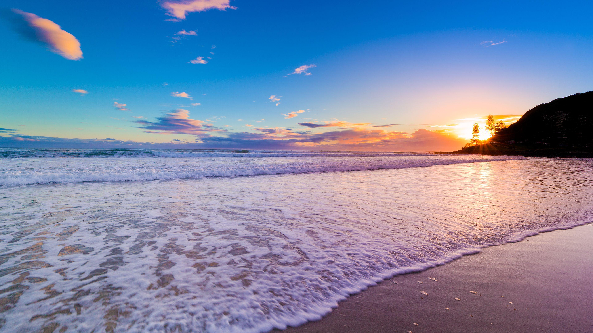

Oceanie
Population: 900 000
Oceanie is made up of 8 islands Pluto, Andromeda, Saturn, Mercury, Mars, Luna, Terra, and Venus.
The main language there is called Eliin it was mainly used before art become money and it involves having a symbol for each word.

They are the only country that doesn’t send their children to Shiland to learn and teach them their own way but if a child wants to go to Shiland they are allowed to as the culture centers around building your own life and having the freedom to live however you wish.
They have found a way to produce power through a system that works like a heart. It converts air into energy and pumps it around to stores and after you use it it pumps it back. Half the city is powered by oxygen the other half carbon dioxide and it is converted between the two.
They have a high respect for each other, nature and the ocean. So they only produce and use what they need and give anything left over to the rest of the world.
Viktor- God of the ocean and moon looks over and protects these people especially from Sawyer who hates the fact they are harder to control as they live in a more socialist society and don’t have a leader. He is afraid of their ways leaking into everyone else's lives since he wants to have power over them not simply be a protector.